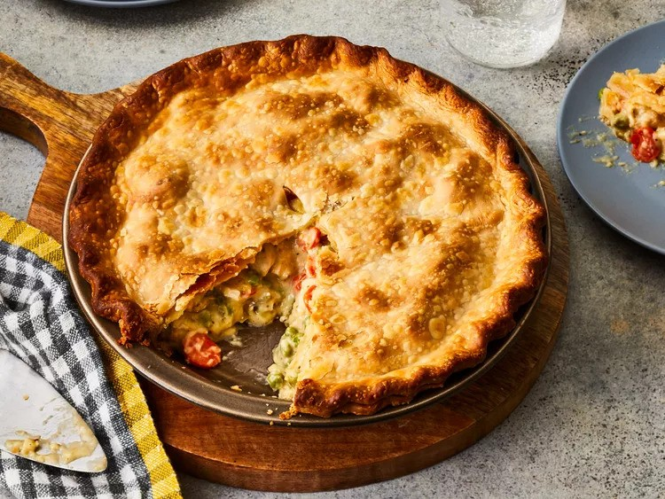

Chicken Pot Pie

Description
A chicken pot pie made with carrots, peas, celery, and a pre-made crust.
Ingredients
- 1 pound skinless, boneless chicken breast halves - cubed
- 1 cup sliced carrots
- 1 cup frozen green peas
- 1/2 cup sliced celery
- 1/3 cup butter
- 1/3 cup chopped onion
- 1/3 cup all-purpose flour
- 1/2 teaspoon salt
- 1/4 teaspoon black pepper
- 1/4 teaspoon celery seed
- 1 3/4 cup chicken broth
- 2/3 cup milk
- 2 (9 inch) unbaked pie crusts
Steps
- Gather ingredients and preheat oven to 425 degrees F (220 degrees C)
- Combine chicken, carrots, peas, and celery in a saucepan; add water to cover and bring to a boil. Boil for 15 minutes, then remove from heat and drain.
- While chicken is cooking, melt butter over medium heat in a separate saucepan. Add onion and cook until soft and translucent, about 5 to 7 minutes. Stir in flour, salt, pepper, and celery seed.
- Slowly stir in chicken broth and milk.
- Reduce heat to medium-low and simmer until thick, 5 to 10 minutes. Remove from heat and set aside.
- Place chicken and vegetables in bottom pie crust. Pour hot liquid mixture over top.
- Cover with top crust and seal edges, cutting away excess dough. Cut several small slits in the top crust to let steam escape.
- Bake in oven until golden brown and filling is bubbly, about 30 to 35 minutes. Cool for 10 minutes before serving.
- Serve and enjoy!